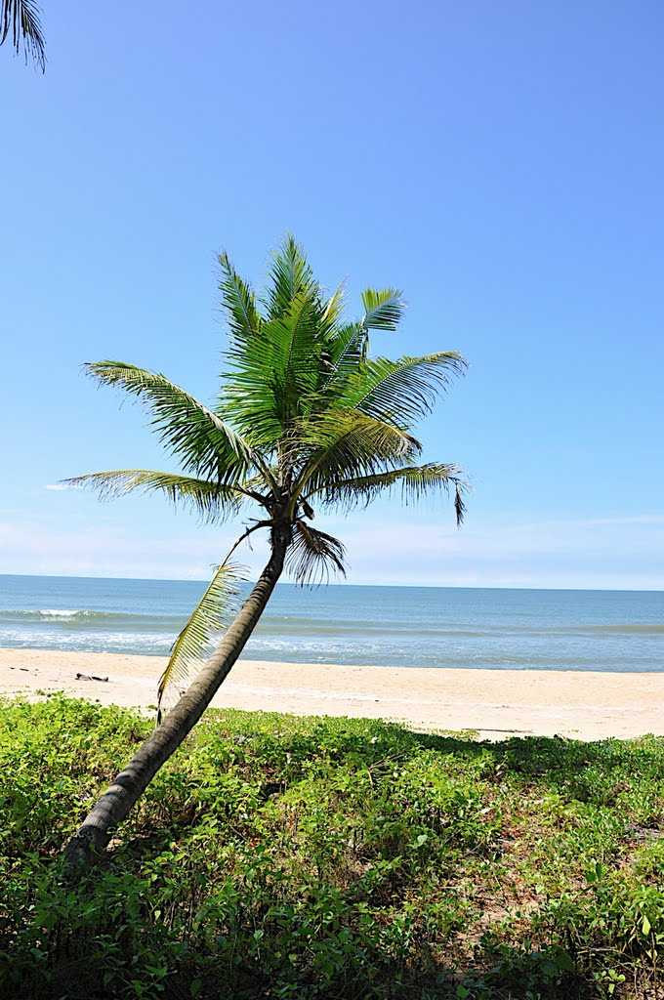

Kasaragod district, which is located at the northern end of Kerala, was formed on 24th May, 1984. The District formed on the basis of the order of 19.05.1984 of GO (MS) number 520/84 / RD, comprising of Hosdurg and Kasaragod taluks which were part of undivided Kannur District. In the east the district is Kodagu and Dakshina Kannada districts of Karnataka, the Arabian Sea in the west, and the Kannada District of Karnataka in the north. The district is bounded by the Kannur district. We can say that Kasaragod is the crown of the state Kerala, Land of many differnt languages, the history of the invasion and resistance, testimonies of historical forts, remainings of innovative culture of the modern stone age like ‘Chenkallarakal’, ‘Nannangatikal’, ‘Muniyarakal’, Inscriptions of historical rulers and their practices, Lush green land of highlands of western ghat, the midlands, the unique traditions and practice of worship. Kasargod is reputed for its practice of sharing the culture and languages. The name Kasaragod resembles ‘a group of trees of Kanjira’. In the collection of poems of the poet Linkanna uses the term “Kasaragod” as ‘Thullu Rajaraller Malerite’. Kasaragod is no longer a group of Kanjira wood, land that is rich in lush green areca palm, coconut trees and bananas and hugged by beaches of Arabian Sea. Kasaragod is rich in history and heritage.
DESTINATIONS Must See
|
Bekal Fort
Built almost 300 years ago, Bekal Fort is considered as one of the largest and most preserved forts in Kerala.
Learn more
Ranipuram
The gentle hills of Ranipuram in Kerala are famous for its trekking trail. Situated at the height of about 750 meters above sea level, this destination has thick forest vegetation and lush green grasslands.
Learn more
Ananthapura Lake Temple
The temple is situated in Kasargod district of Kerala and is connected to Sri Anantha Padmanabha Temple ,Trivandrum. It's a lovely temple surrounded by a lake.
Learn more

Valiyaparamba
There could not be better place to relax than the beautiful and serene backwater stretches of Kerala, God's own country.
Learn more